01はじめに
あなたは今朝、スッキリと目が覚めましたか。
布団から出た瞬間に「よく眠れた」と感じた日が、最近何日あったでしょうか。
多くの人が「なんとなく眠れている」と思いながら、実はずっと睡眠負債を積み重ねています。
日本人の8割以上が睡眠に何らかの悩みを抱えているというデータがあります。
世界の中でも日本は「睡眠不足大国」として知られており、その状況は年々深刻化しています。
では、なぜこれほど多くの人が眠れないのでしょうか。
答えは単純です。
睡眠のことを「正しく知らない」からです。
「早く寝ればいい」「運動すれば眠れる」「お酒を飲めばすぐ寝られる」——こうした思い込みが、むしろ睡眠の質を下げているケースは少なくありません。
本書では、最新の睡眠科学をベースに、今日から実践できる具体的な方法を5つの章に分けて解説します。
第1章では睡眠の科学的な仕組みを理解します。
第2章では睡眠を壊している悪習慣を見直します。
第3章では睡眠環境を最適化する方法を学びます。
第4章では食事・運動・体温調節という三大アプローチを紹介します。
第5章では朝の目覚めから睡眠の質を上げる逆算戦略を解説します。
本書を読み終えたとき、あなたはきっと「眠り方を変えれば、人生が変わる」という確信を持てるはずです。
毎朝スッキリと目覚め、日中に最高のパフォーマンスを発揮する——そんな日常を手に入れましょう。
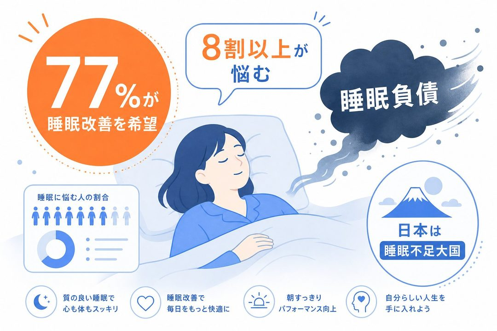
はじめに：眠れない日本人の現実
02第1章 睡眠の科学：なぜ「質」が「量」より重要なのか
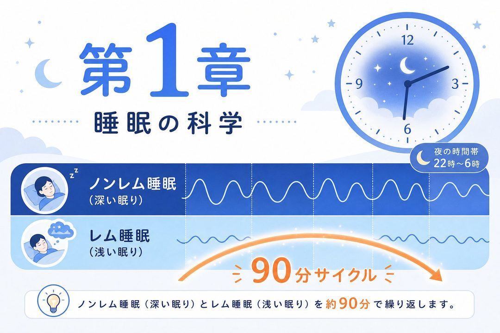
第1章：睡眠の科学
睡眠とは何か——脳と身体の「最強メンテナンス」
睡眠は、ただ横になって目を閉じている時間ではありません。
睡眠中、脳と身体は一日の活動で受けたダメージを修復し、記憶を整理し、免疫系を強化しています。
言わば、人間にとって最強のメンテナンスタイムです。
私たちが眠っている間、脳内では驚くべきことが起きています。
老廃物を洗い流す「グリンパティック・システム」が活発に働き、アルツハイマー型認知症の原因物質とされるアミロイドβを除去します。
成長ホルモンが大量に分泌され、筋肉・皮膚・骨の修復が進みます。
免疫細胞が増殖し、病原菌への抵抗力が高まります。
これらはすべて、十分な「質の高い睡眠」があってこそ機能します。
睡眠時間が6時間未満の人は、7〜9時間眠る人に比べてかぜをひきやすくなることが研究で明らかになっています。
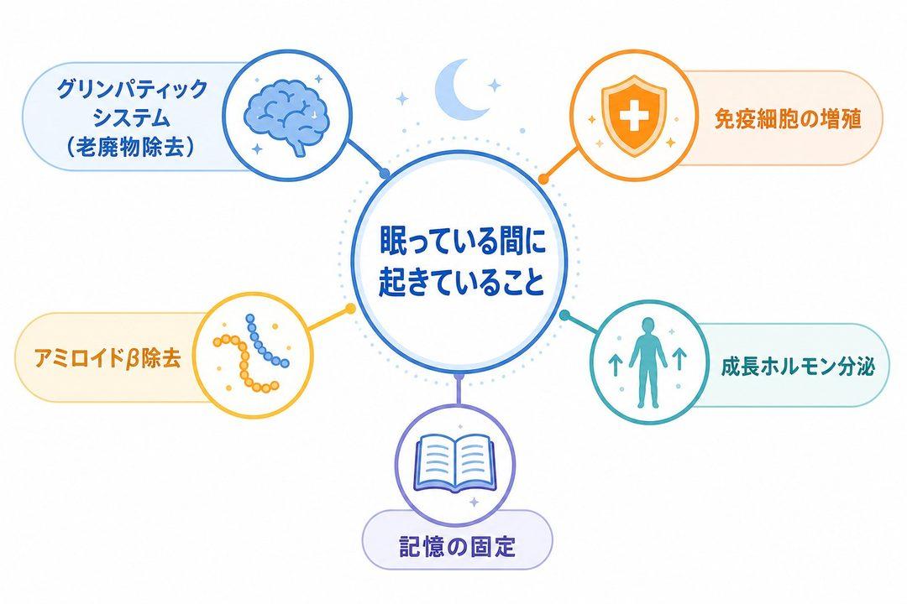
睡眠中に起きていること
睡眠の2種類——ノンレムとレムの役割
睡眠には大きく2種類あります。
ノンレム睡眠とレム睡眠です。
ノンレム睡眠は「深い眠り」で、さらに3段階（N1・N2・N3）に分かれます。
最も深いN3（徐波睡眠）のとき、成長ホルモンが最も多く分泌されます。
身体の物理的な修復・再生はこの段階で集中的に行われます。
レム睡眠は「浅い眠り」で、脳が夢を見ている状態です。
レム睡眠中は前日の記憶が整理・統合され、感情的な処理が行われます。
「一晩寝たら悩みが軽くなった」という経験があるとすれば、それはレム睡眠の働きによるものです。
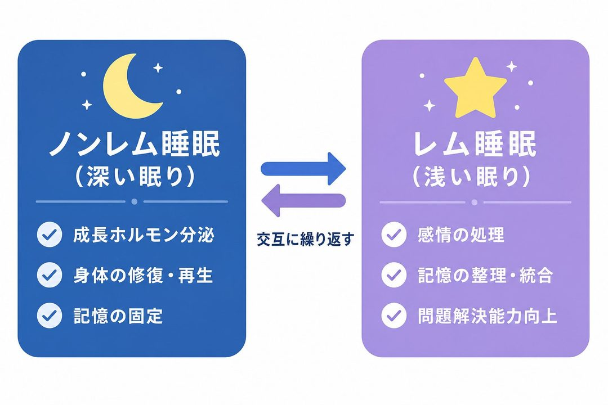
ノンレム・レム睡眠の役割分担
黄金の90分——最初のサイクルがすべてを決める
睡眠は約90分を1サイクルとして、ノンレムとレムが交互に繰り返されます。
一晩で4〜5サイクル繰り返されますが、中でも最も重要なのが最初の90分間です。
入眠後の最初の90分には、最も深いノンレム睡眠（N3）が出現します。
ここで成長ホルモンの分泌量の約70〜80%が集中します。
つまり「最初の90分の質」が、一晩の睡眠の質全体を左右するのです。
スタンフォード大学の西野精治教授はこれを「黄金の90分」と名付けました。
この最初のノンレム睡眠を深くするために、入浴・室温・就寝前の行動をコントロールすることが、睡眠の質を上げる最重要戦略となります。
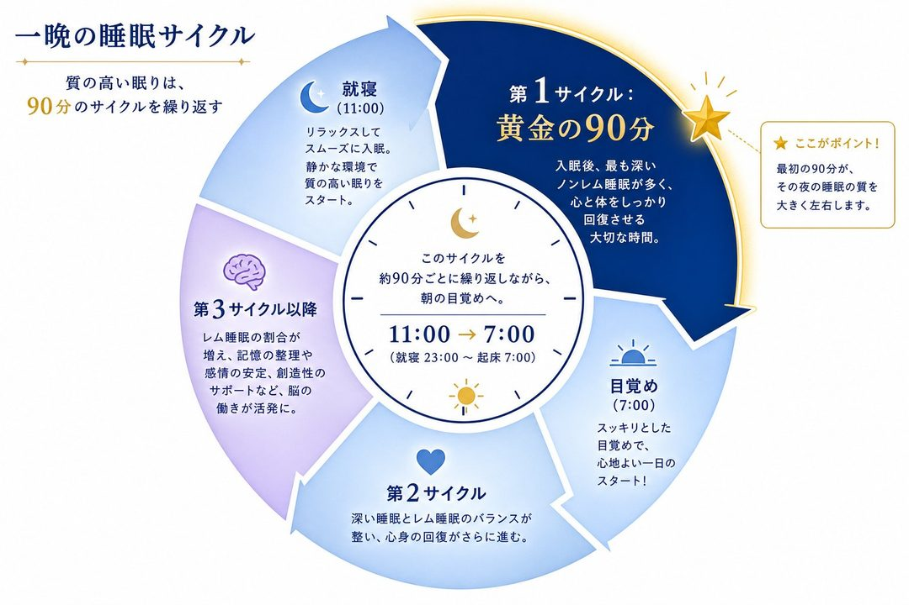
90分睡眠サイクル
体内時計とメラトニン——眠りを司る2大システム
質の高い眠りを理解するには、体内時計（サーカディアンリズム）とメラトニンの仕組みを知ることが欠かせません。
人間の体内時計は約24時間周期で動いており、朝の光を浴びることでリセットされます。
朝7時に起床して日光を浴びると、約14〜16時間後（夜21〜23時頃）に自然な眠気が訪れます。
これが睡眠科学の基本原則です。
一方、メラトニンは「眠りのホルモン」と呼ばれ、暗くなると松果体から分泌されます。
夜の光（特にスマートフォンやPCの青色光）を浴びると、メラトニンの分泌が最大2時間分抑制されることが研究で明らかになっています。
就寝前のスマホがなぜいけないのか、これで理由が明確になりました。
深部体温も眠りに深く関わります。
人間は深部体温が下がるときに眠くなり、上がるときに覚醒します。
この仕組みを意図的に利用する方法については、第4章で詳しく解説します。
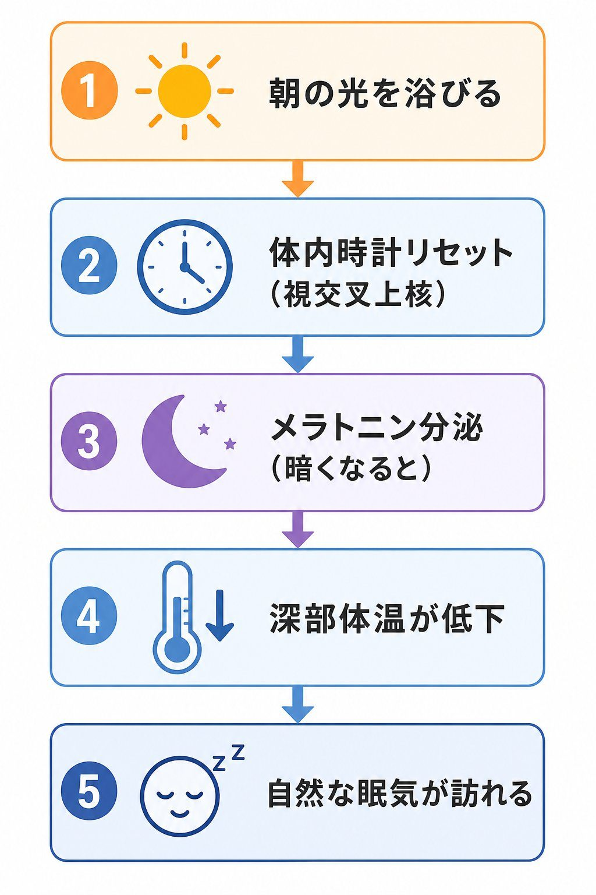
体内時計・メラトニン・深部体温の連動
睡眠負債——じわじわ蓄積する「見えない借金」
「週末にまとめて寝れば大丈夫」と思っていませんか。
残念ながら、睡眠負債（Sleep Debt）はそう簡単には返せません。
毎日1時間の睡眠不足が続くと、3週間後には一晩丸ごと眠れなかった状態と同じ認知機能の低下が生じるという研究結果があります。
睡眠負債が蓄積すると以下のような影響が出ます。
集中力・判断力・記憶力の著しい低下。
免疫機能の低下。
肥満・高血圧・糖尿病リスクの上昇。
うつ病・不安障害のリスク増加。
さらに恐ろしいのは、慢性的な睡眠不足になると「眠れていない自覚がなくなる」ことです。
「自分は6時間で大丈夫」と感じていても、客観的なテストでは能力が大幅に低下しています。
睡眠負債をなくすことが、すべての始まりです。
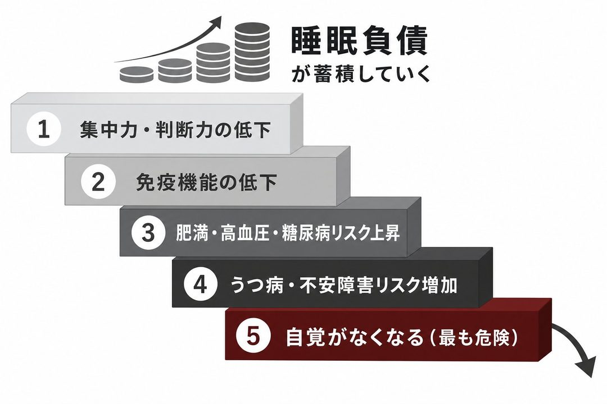
睡眠負債が引き起こす悪影響
03第2章 睡眠を壊す「悪習慣」の正体
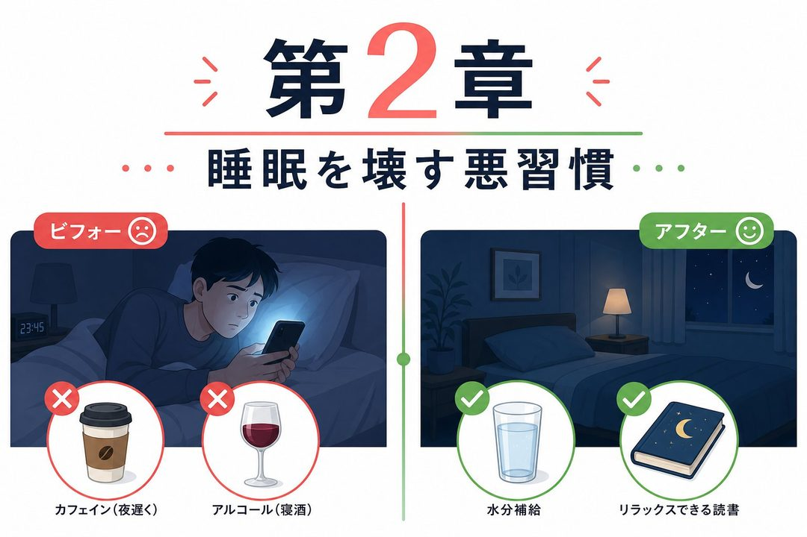
第2章：睡眠を壊す悪習慣
スマートフォンが睡眠を破壊するメカニズム
現代人の睡眠を最も脅かしている存在——それがスマートフォンです。
スマホが睡眠に悪い理由は、ブルーライトだけではありません。
ブルーライト問題: スマホ・PCの画面が発する青色光（ブルーライト）は、メラトニンの分泌を抑制します。
就寝1時間前にスマホを使うと、メラトニンの分泌が約90分遅延します。
これは「寝ようとしているのに脳が覚醒している」状態を作り出します。
精神的覚醒問題: SNSのチェック、ニュースの閲覧、ゲームなど——スマホの操作は脳に刺激を与え続けます。
面白いコンテンツを見ると、ドーパミンが分泌され、「もっと見たい」という衝動が起きます。
これが脳を覚醒状態に保ち、自然な眠気をかき消してしまいます。
解決策は明確です。
就寝1時間前にスマホを手の届かない場所に置く。
これだけで多くの人の睡眠は劇的に改善します。
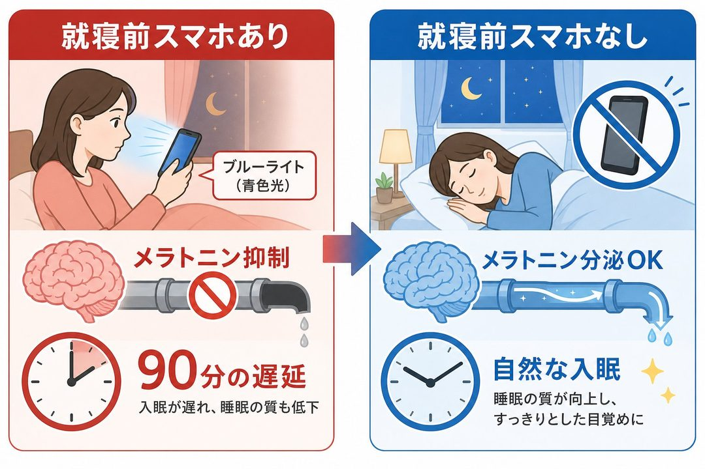
スマホと睡眠：Before/After
カフェインの「半減期」を知らないと損をする
「夕方にコーヒーを飲んでも眠れる」という人は多いですが、それは睡眠の質が低下しているだけかもしれません。
カフェインには重要な特性があります——半減期が約5〜7時間です。
午後3時に飲んだコーヒー1杯のカフェインは、夜10時になっても半分の量が体内に残っています。
カフェインは眠気物質「アデノシン」の受容体をブロックします。
アデノシンは一日の活動を通じて脳に蓄積し、夜になると自然な眠気を作り出す物質です。
カフェインがそれをブロックすると、「疲れているのに眠れない」という状態が生まれます。
推奨: カフェインの摂取は午後2時（できれば正午）までに止める。
これが睡眠科学の世界標準です。
コーヒーだけでなく、紅茶、緑茶、コーラ、エナジードリンクにもカフェインが含まれています。
特にカフェインへの感受性は個人差が大きく、加齢とともに代謝が遅くなる傾向があります。
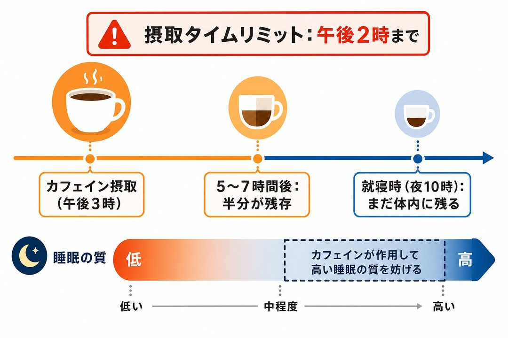
カフェインの体内時計
アルコールは睡眠薬ではない
「お酒を飲むとよく眠れる」という人は多いです。
しかしこれは、睡眠科学的に見ると大きな誤解です。
アルコールが眠りに与える影響を正確に理解しましょう。
確かにアルコールには鎮静作用があり、入眠を早める効果があります。
しかし問題は睡眠の後半です。
アルコールが分解される過程でアセトアルデヒドという物質が生成され、これが眠りを浅くします。
飲酒後の眠りはノンレム睡眠（特に深い睡眠）が減少し、レム睡眠が抑制されます。
つまり、身体の修復も、記憶の整理も、感情の処理も、すべてが不十分になるのです。
さらにアルコールには利尿作用があるため、深夜にトイレで目が覚めることも増えます。
「飲んで寝たのになんか疲れが取れない」という経験に心当たりがあれば、それがアルコールの影響です。
就寝3時間前以降のアルコールは睡眠の質を著しく下げます。
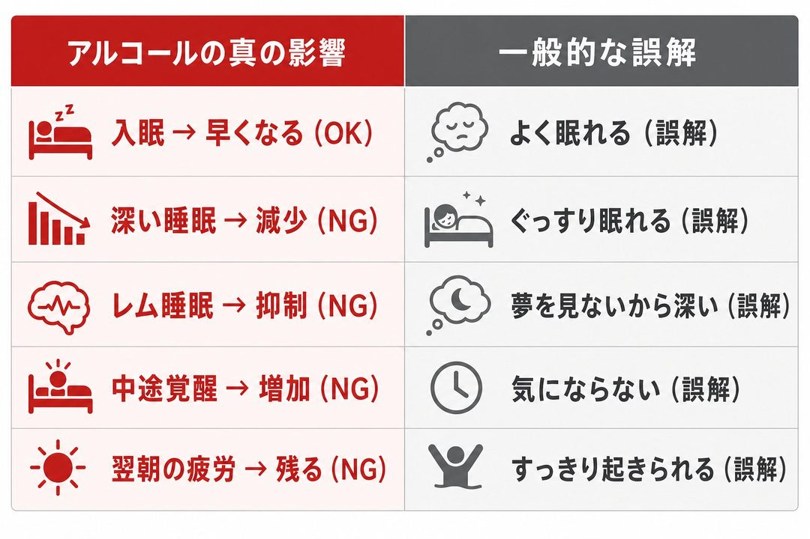
アルコールの睡眠への真の影響
不規則な就寝時刻が体内時計を狂わせる
「今日は仕事が遅くなったから、いつもより2時間遅く寝よう」という判断は、翌日以降に影響を与えます。
人間の体内時計は、毎日同じ時刻に起床・就寝することで精度が保たれます。
不規則な睡眠スケジュールは「ソーシャルジェットラグ（社会的時差ボケ）」と呼ばれ、まるで毎週末に時差2時間の旅行をしているような状態が体に生じます。
2025年の西川睡眠白書では、このソーシャルジェットラグが若年層・働き世代に深刻であることが報告されました。
週末の「寝だめ」も同様で、月曜日の朝に眠れない「月曜ブルー」の主因の一つです。
解決策は固定の起床時刻を守ることです。
就寝時刻は多少ずれてもいいですが、起床時刻は休日も含めて固定する——これが最も効果的な体内時計のリセット方法です。
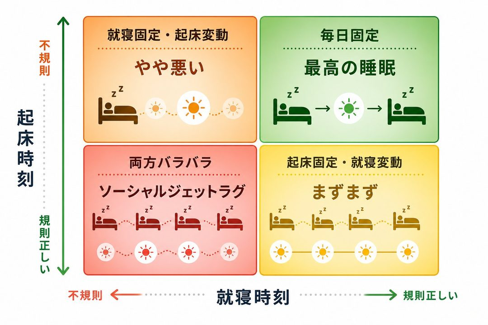
睡眠スケジュールの良し悪し
寝る直前の「熱いお風呂」は逆効果
「疲れたから熱いお風呂でさっぱりして寝よう」は多くの人がやっている行動です。
しかし就寝直前（30分以内）の熱い入浴は、実は睡眠の質を下げます。
その理由は「深部体温」の仕組みにあります。
私たちは深部体温が下がるタイミングで眠くなります。
熱いお風呂で急激に体温を上げると、体温が下がりきるまでに1〜2時間かかります。
結果として、寝ようとしても体温が高い状態が続き、寝つきが悪くなるのです。
正しい入浴法は就寝1〜2時間前に38〜40℃のぬるめのお湯に10〜15分入ることです。
これにより深部体温が一度上昇し、その後の急激な低下（放熱）が眠気を自然に誘います。
詳しいメカニズムと活用法は第4章で解説します。
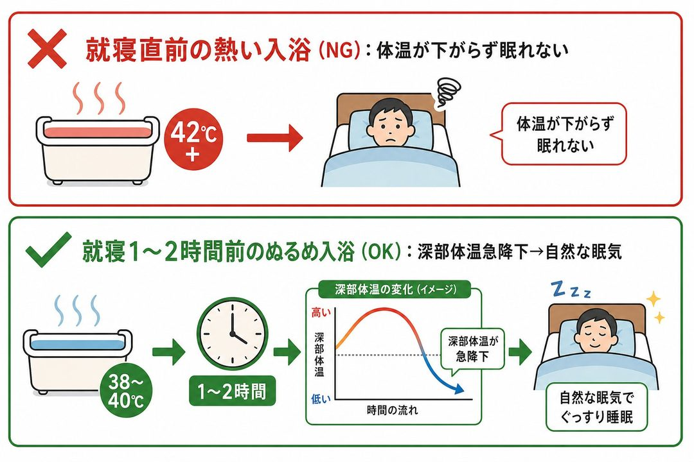
入浴タイミングと深部体温の関係
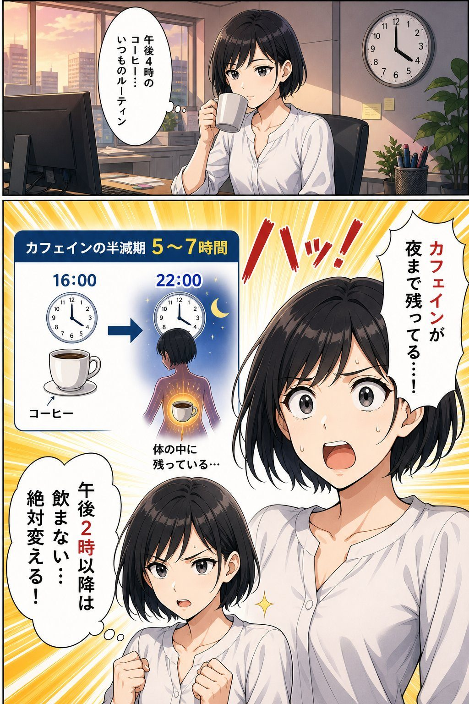
04第3章 眠れる部屋をつくる——睡眠環境の最適化
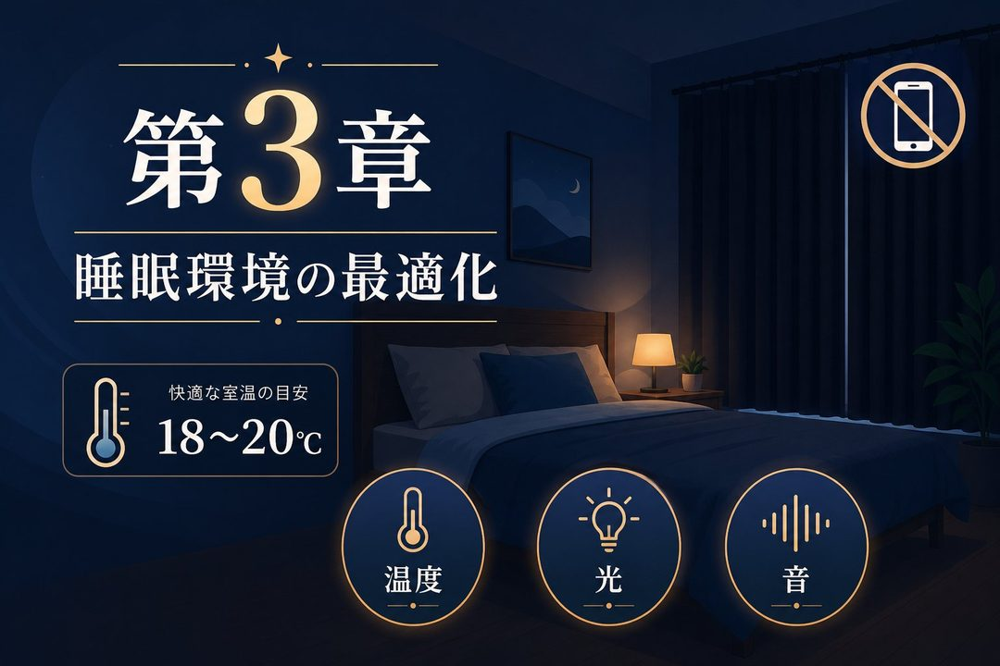
第3章：睡眠環境の最適化
睡眠環境は「三大要素」で決まる
どんなに正しい生活習慣を実践しても、寝室の環境が悪ければ質の高い睡眠は得られません。
睡眠環境を最適化する三大要素は「温度」「光」「音」です。
この3つを整えるだけで、多くの人が劇的な睡眠改善を体験しています。
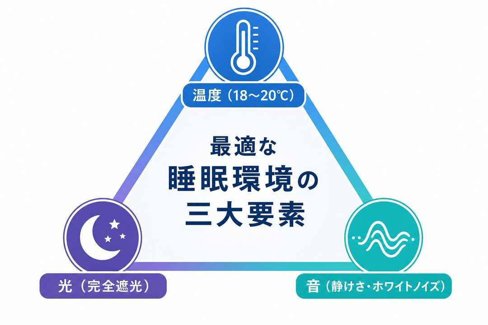
睡眠環境の三大要素
室温——18〜20℃が「黄金温度」
睡眠研究が一致して示す最適な寝室温度は18〜20℃です。
なぜこの温度が最適なのでしょうか。
深部体温が下がるほど眠りは深くなります。
室温が低めに保たれると、放熱が促進されて深部体温が下がりやすくなります。
夏場に暑い部屋では眠れないのは当然で、体温が下がりにくいからです。
逆に寒すぎる部屋も眠りを妨げます——寒さへの防御反応で筋肉が緊張するからです。
実践法:
- エアコンの設定温度: 夏は26〜28℃（室温18〜20℃になるよう調整）
- 冬は暖めすぎず、20℃前後を維持
- 手足が冷える場合は靴下の着用よりも、毛布で末端を覆うほうが深部体温調整に有利
また足の裏や手のひらから放熱することで深部体温が下がるため、靴下を脱ぐことで眠りが深まることもあります。
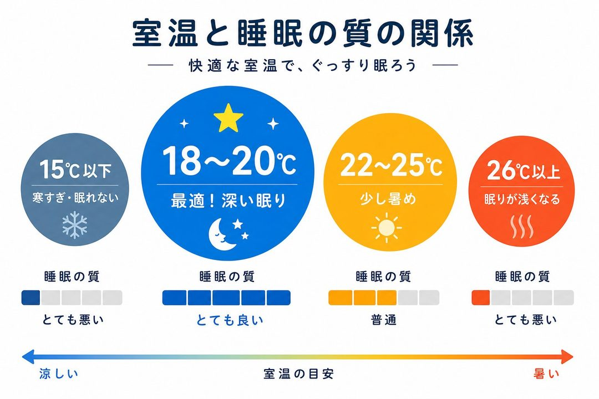
室温と睡眠の質の関係
光——「完全な暗さ」が最高の眠りをつくる
人間の目は非常に敏感で、わずかな光でもメラトニンの分泌が抑制されます。
理想の寝室は「ぐっすり眠れる暗さ」——つまり手が見えないほどの暗さです。
街灯・電子機器のランプ・カーテンの隙間から入る光も、睡眠を浅くする原因になります。
光対策のポイント:
- 遮光カーテンを使用する（最も費用対効果が高い投資）
- スタンバイランプ（家電のLED）はテープで塞ぐかコンセントから抜く
- 起床30分前からの光目覚まし時計（漸増光）の利用は逆に効果的
- 廊下の電球をLED（暖色系）に変えることで、夜のトイレ時の覚醒を防ぐ
一方で、朝の光は最大の武器です。
起床後すぐに明るい光（自然光が理想）を浴びることで体内時計がリセットされ、16〜17時間後の眠気の精度が高まります。
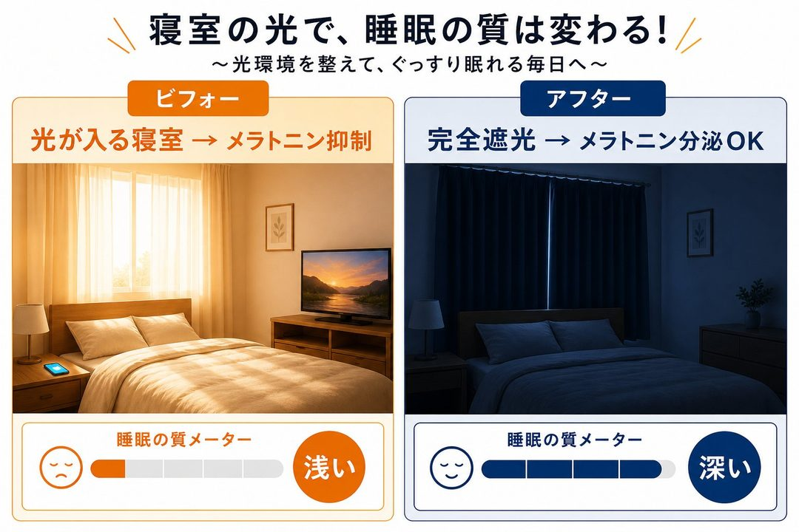
光環境：Before/After
音——「静けさ」か「ホワイトノイズ」か
睡眠に最適な環境は「無音」ではなく、「一定の音」です。
突発的な音（車の音、物音）は覚醒反応を引き起こします。
これは完全な無音の環境で小さな音でも覚醒しやすくなるためです。
近年注目されているのがホワイトノイズ（白色雑音）の活用です。
ホワイトノイズとは、全周波数の音が均等に混ざった「ザーッ」という音で、突発的な音の変化を遮断し、睡眠を安定させる効果があります。
扇風機の音・雨音・海の波音なども同様の効果があります。
音対策のポイント:
- 騒音が気になる環境: ホワイトノイズアプリや扇風機を活用
- パートナーのいびきが悩み: 耳栓 + ホワイトノイズの組み合わせが効果的
- 急な物音が気になる: ホワイトノイズで「マスキング」する
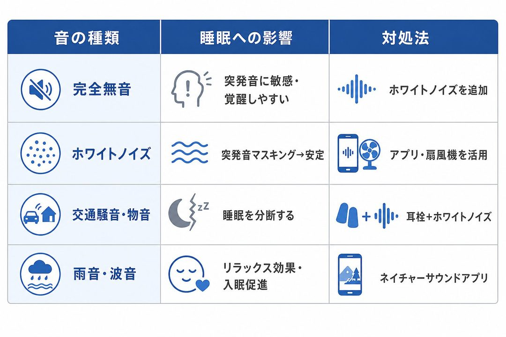
睡眠と音の関係
寝具の選び方——枕・マットレスが睡眠の基盤を作る
「どんな枕でも寝られる」という人はいますが、最適な寝具は睡眠の深さと疲労回復を根本から変えます。
枕の選び方:
枕の高さは首の自然なカーブを保つ高さが最適です。
高すぎる枕は首・肩のこりを生み、低すぎる枕は顎が浮いて気道を圧迫します。
仰向けで寝る人は低め、横向きで寝る人は高めの枕が適しています。
マットレスの選び方:
マットレスの役割は「体圧を均等に分散し、脊椎の自然なカーブを維持すること」です。
柔らかすぎるマットレスは腰が沈みすぎて腰痛の原因になり、硬すぎると圧迫点に血行障害が生じます。
「中程度の硬さ」（ミディアムファーム）が多くの人に適していますが、体重・体型・寝姿勢によって異なります。
枕やマットレスへの投資は「毎晩8時間使うもの」への投資です。
睡眠の質が改善されれば、日中のパフォーマンスと健康に多大なリターンをもたらします。
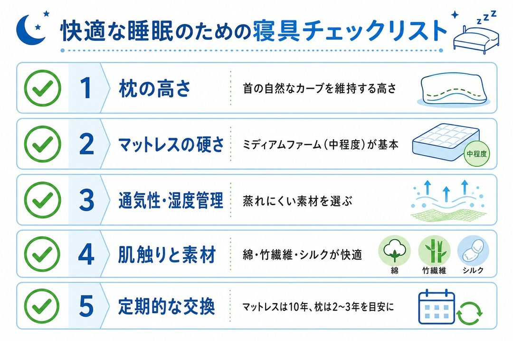
快眠寝具の選び方チェックリスト
デジタルデトックスゾーンとしての寝室
前章でスマートフォンの害について述べましたが、最も効果的な対策は「寝室にスマホを持ち込まない」ことです。
スマホを寝室に置くと、眠れないときについ手が伸び、余計に目が覚めてしまいます。
寝室を「眠るためだけの空間」として定義することは、睡眠科学の世界では「刺激制御法（Stimulus Control）」と呼ばれ、不眠治療にも使われる有効なアプローチです。
寝室のデジタルデトックス化:
- スマホは別の部屋で充電する（目覚まし代わりの場合は専用アラーム時計を使用）
- テレビを寝室に置かない
- 仕事のノートPC・書類を寝室に持ち込まない
「寝室に入る＝眠る時間」というシグナルを脳に植え付けることで、条件反射的に眠気が起きるようになります。
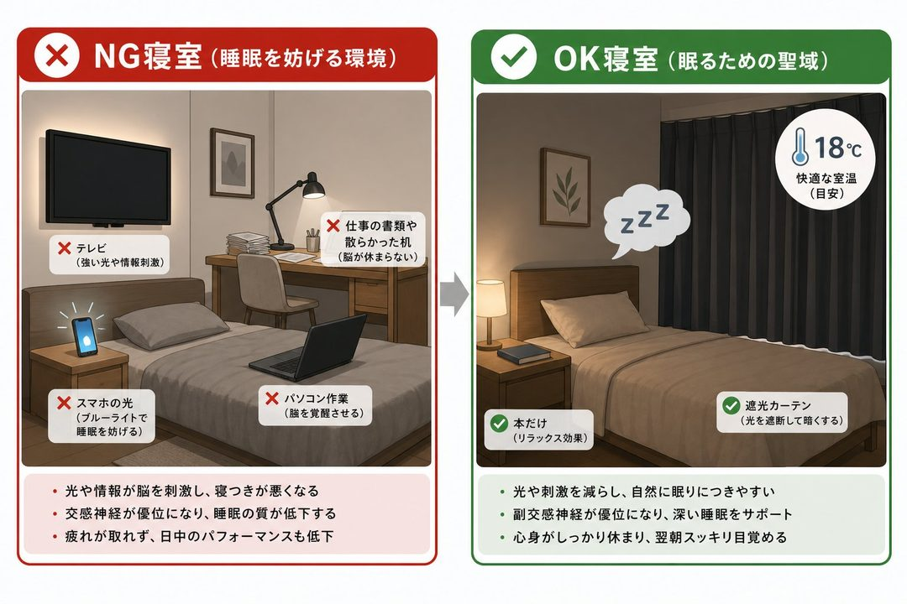
寝室環境の理想と現実
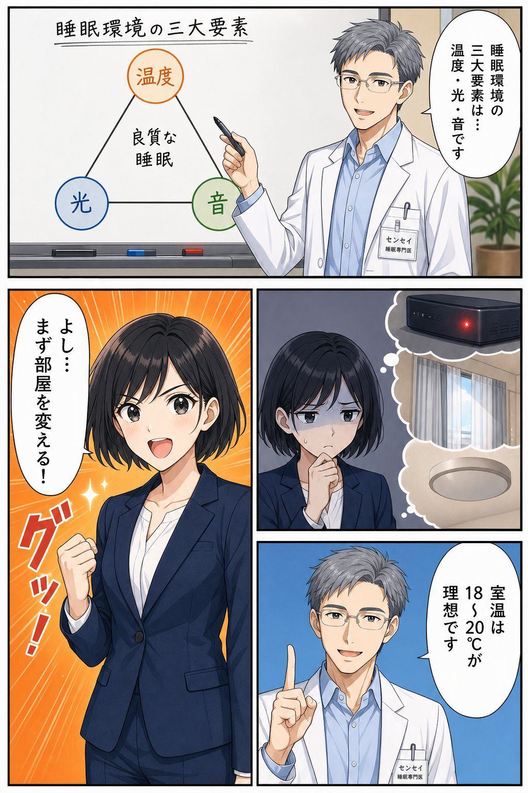
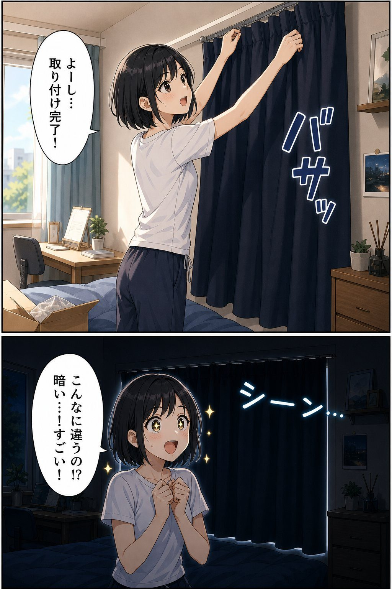
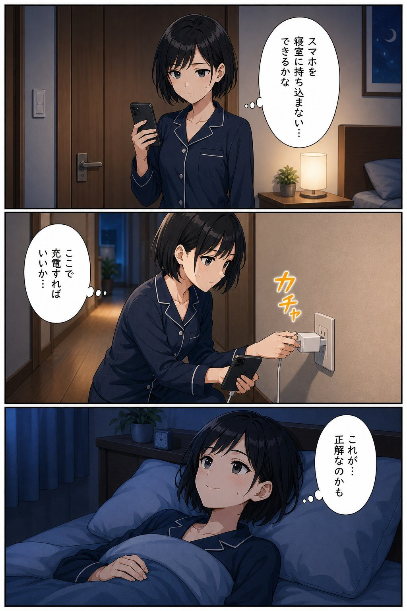
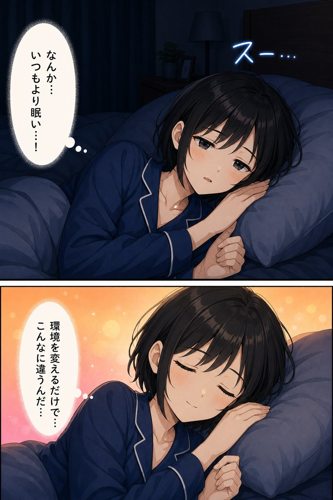
05第4章 食事・運動・体温——睡眠を深める三大アプローチ
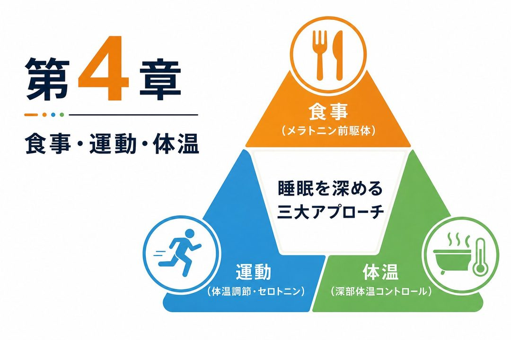
第4章：睡眠を深める三大アプローチ
食事で眠りを深める——「メラトニン前駆体」を意識する
眠りの質は食べるものでも大きく変わります。
特に重要なのがトリプトファンというアミノ酸です。
トリプトファンは体内でセロトニンに変換され、さらにメラトニンへと変換されます。
つまり「トリプトファン → セロトニン → メラトニン」という経路で、食事が眠りを準備するのです。
トリプトファンを多く含む食品:
牛乳・乳製品（ホットミルクが伝統的に睡眠に良いとされる理由）。
大豆製品（豆腐・納豆・豆乳）。
バナナ（トリプトファン＋炭水化物＋マグネシウムの三重効果）。
七面鳥・鶏肉。
ナッツ類（くるみ・アーモンド）。
また、マグネシウムは筋肉を弛緩させ、神経系を落ち着かせる効果があります。
アーモンド・ほうれん草・ひまわりの種などに豊富に含まれています。
夕食のタイミング:
就寝3時間前までに夕食を終えることが理想です。
消化活動が活発な状態で眠ると、深い睡眠が妨げられます。
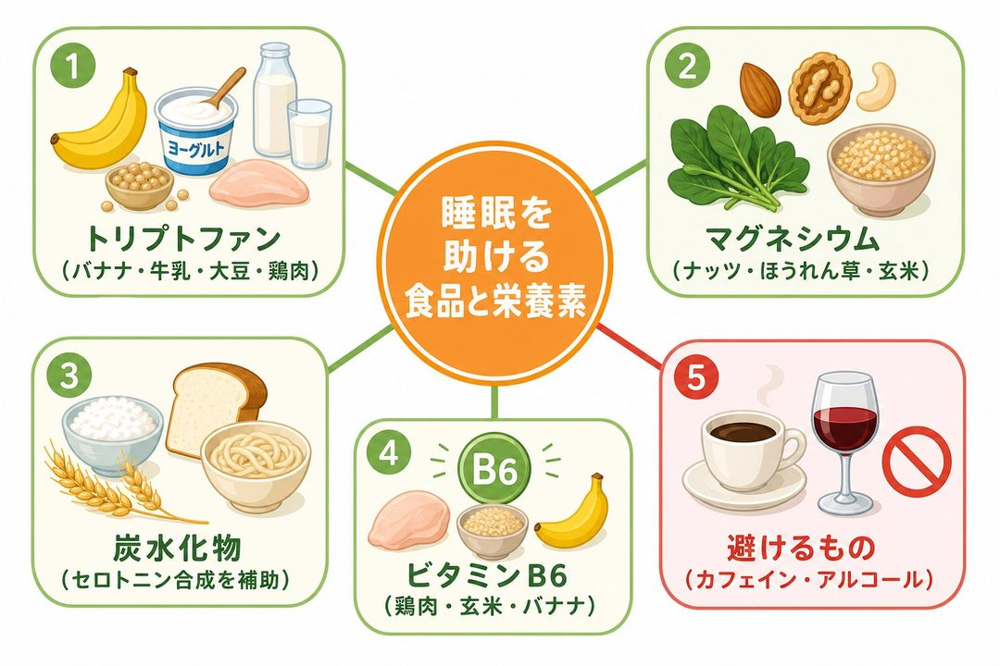
睡眠を助ける食品と栄養素
避けるべき食べ物・飲み物
睡眠を助ける食品がある一方、睡眠を妨げる食品にも注意が必要です。
就寝前に避けるもの:
- カフェイン（前章参照）
- アルコール（前章参照）
- 高脂肪・高タンパクの重い食事（消化に時間がかかる）
- 辛い食べ物（体温上昇・胃腸への刺激）
- 砂糖を多く含む甘いお菓子（血糖値の急上昇・急降下）
特に砂糖の急激な摂取は注意が必要です。
就寝前に甘いものを食べると血糖値が急上昇し、インスリンが分泌されます。
その後の血糖値の急降下が、深夜2〜3時頃に「覚醒反応」を引き起こすことがあります。
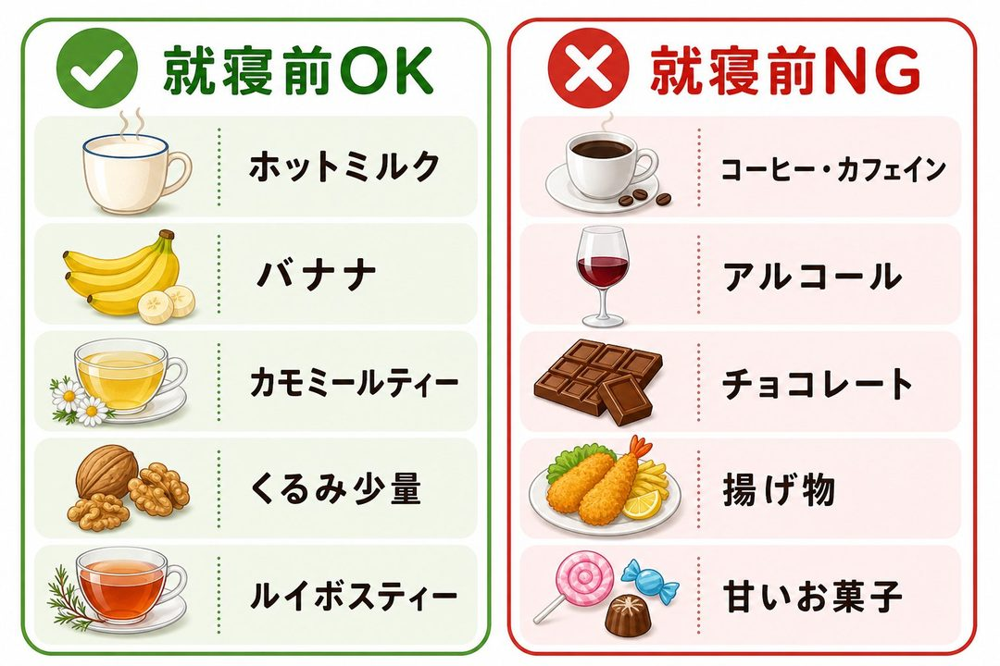
睡眠前の食べ物OK/NG一覧
運動で睡眠の質を上げる——タイミングと種類
定期的な運動が睡眠の質を上げることは、多くの研究で証明されています。
しかし「いつ」「どんな」運動をするかで、効果は大きく変わります。
有酸素運動（最も効果的）:
ウォーキング・ジョギング・水泳・サイクリングなどの有酸素運動は、体温を上げてその後の放熱を促し、深い睡眠を増やす効果があります。
また、日光を浴びながら行う朝・昼のウォーキングはセロトニンの分泌を促し、体内時計のリセットにも役立ちます。
推奨タイミング:
最も理想的な運動時間は午後2時〜夕方6時頃です。
この時間帯に運動すると、就寝時に深部体温が低下しやすくなり、入眠がスムーズになります。
就寝3時間前以降の激しい運動は避けましょう。
心拍数・体温・アドレナリンが高まった状態では、なかなか眠れなくなります。
ストレッチ・ヨガ:
就寝前のゆっくりしたストレッチは、副交感神経を優位にしてリラックス効果をもたらします。
特に深呼吸を組み合わせたヨガ（陰ヨガ・リストラティブヨガ）は睡眠の質向上に有効なことが研究で示されています。
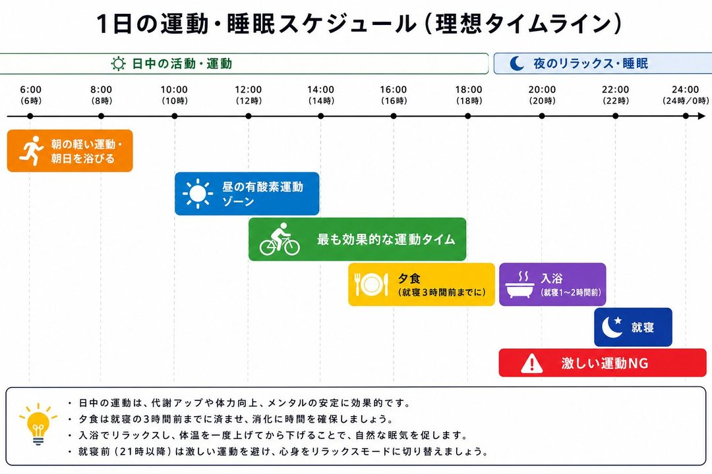
運動・食事・入浴の最適タイムライン
深部体温コントロール——入浴の「科学的活用法」
睡眠の質を上げる最も手軽で効果的な方法の一つが、入浴のタイミングと温度の最適化です。
体温の仕組みをもう一度確認します。
人間の「深部体温」は、日中高く夜に向かって低下します。
この深部体温の低下が、自然な眠気の信号です。
入浴を睡眠改善に活用するポイントは「体温のパラドクス」にあります。
ぬるめのお湯（38〜40℃）に入浴すると、皮膚の血管が広がり、深部の熱が皮膚を通じて外気に放出されます。
これにより入浴後1〜2時間で深部体温が急激に下がり、自然な眠気が訪れます。
実践的な入浴プロトコル:
- 温度: 38〜40℃のぬるめのお湯
- 時間: 10〜15分（全身浴が最も効果的・難しければ足湯でも可）
- タイミング: 就寝1〜2時間前
足湯でも効果があります。
42℃のお湯に20分間足を浸けるだけで、深部体温の低下を助ける効果が研究で確認されています。
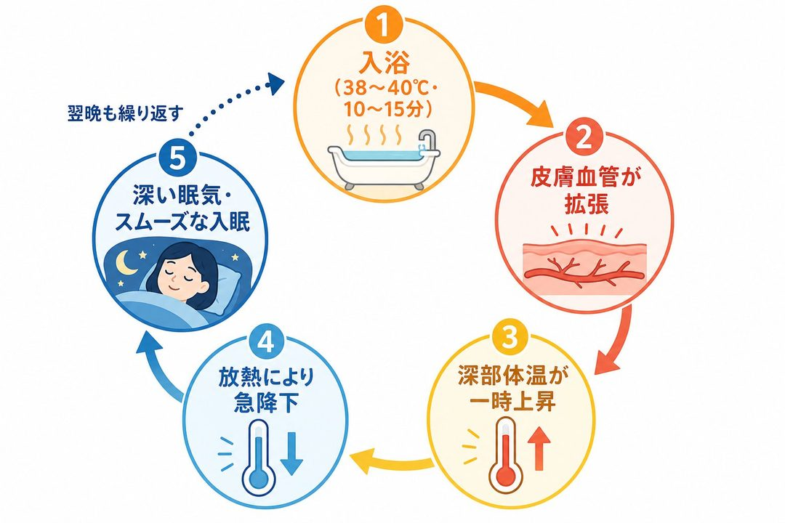
入浴と深部体温のサイクル
パワーナップ——昼寝の正しい使い方
昼寝は眠気を払拭するだけでなく、認知機能・集中力・記憶力を向上させる強力なツールです。
NASAのパイロット対象研究では、26分間の昼寝がその後2時間の集中力を34%向上させることが示されました。
Google・Nike・Samsung等の大手企業が社内に昼寝スペースを設ける理由もここにあります。
正しいパワーナップの方法:
- 時間: 15〜20分（それ以上は深いノンレム睡眠に入り、起きたときに強い眠気「睡眠惰性」が残る）
- タイミング: 午後1〜3時頃（午後の自然な眠気のタイミング）
- 方法: 椅子でも机でも可。
アラームをかけて安心して眠る
「コーヒーナップ」という裏技:
昼寝直前にコーヒーを飲み、20分後に自然に覚醒する方法です。
カフェインが効き始めるのが摂取後約20〜30分なので、ちょうど起きる頃に覚醒効果が現れます。
これにより目覚めがスッキリし、午後のパフォーマンスが大幅に向上します。
注意点: 午後3時以降の昼寝は夜の睡眠を妨げます。
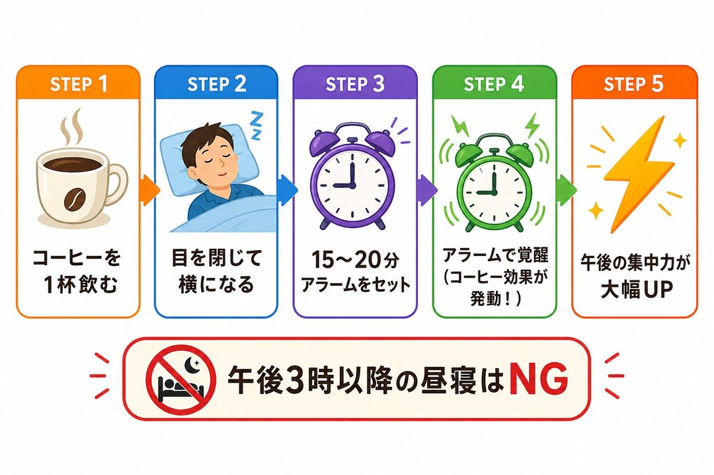
パワーナップの正しいやり方
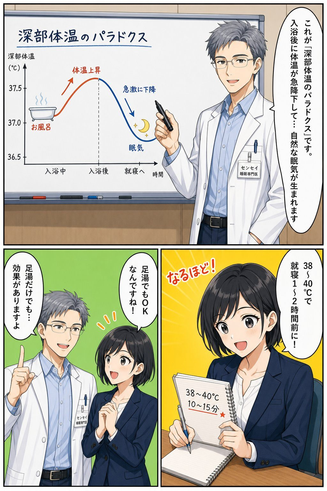
06第5章 朝の習慣が眠りを変える——逆算型睡眠戦略
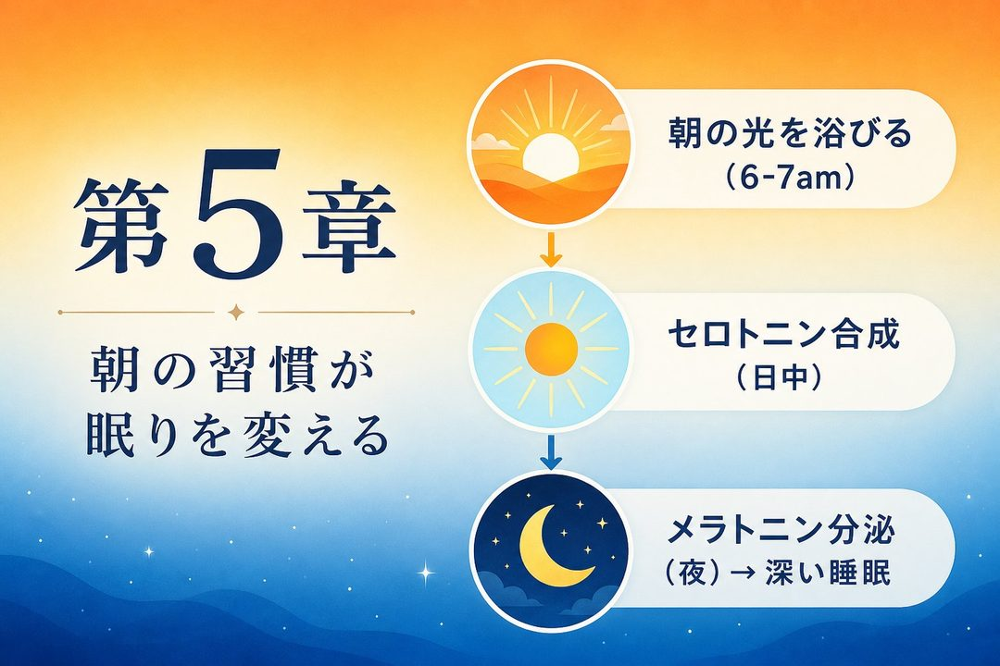
第5章：朝の習慣が眠りを変える
睡眠は「夜ではなく朝から始まる」
多くの人が睡眠を「夜の問題」と捉えています。
しかし睡眠の質は、その日の朝から決まっています。
朝の光を浴びた時刻が、夜の眠気の到来時刻を決めます。
朝の運動が、夜の深部体温の低下を助けます。
朝食のトリプトファンが、夜のメラトニンを準備します。
「良い眠りは良い朝から」——これが逆算型睡眠戦略の核心です。
これから紹介する朝の習慣を取り入れることで、夜になれば自然と眠くなり、深く眠れる身体に変わっていきます。
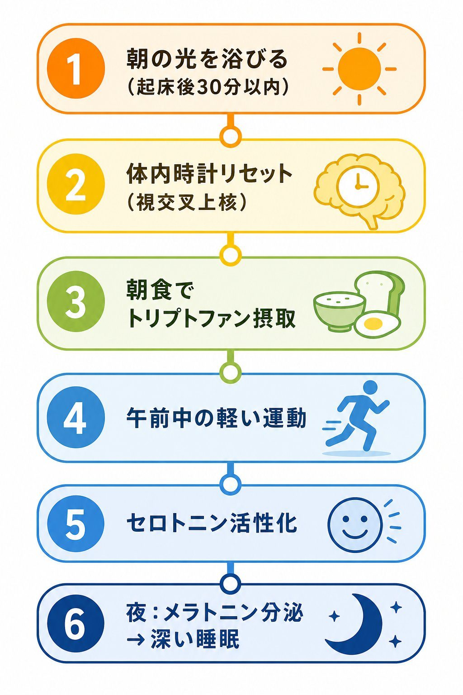
朝から始まる睡眠の連鎖
起床後30分の「光浴び習慣」
目が覚めたらまず最初にやるべきことがあります——カーテンを開けること（または外に出ること）です。
朝の光を浴びることで、脳の視交叉上核という体内時計の司令塔がリセットされます。
このリセットから約14〜16時間後に、自然な眠気が訪れます。
光の強さと効果:
- 屋外の自然光（晴天）: 50,000〜100,000ルクス（最強・10〜15分で十分）
- 室内の窓際: 1,000〜5,000ルクス（効果あり・30分程度が目安）
- 室内の一般照明: 200〜500ルクス（効果薄・最低でも1時間以上必要）
- 光療法ライト: 10,000ルクス（曇り・冬の室内向けの代替手段）
雨の日や冬でも、屋外に出るか窓を開けて光を取り込むことが大切です。
スマートフォンのゲームをしながら窓辺でぼんやりしているだけでも、光の効果は得られます。
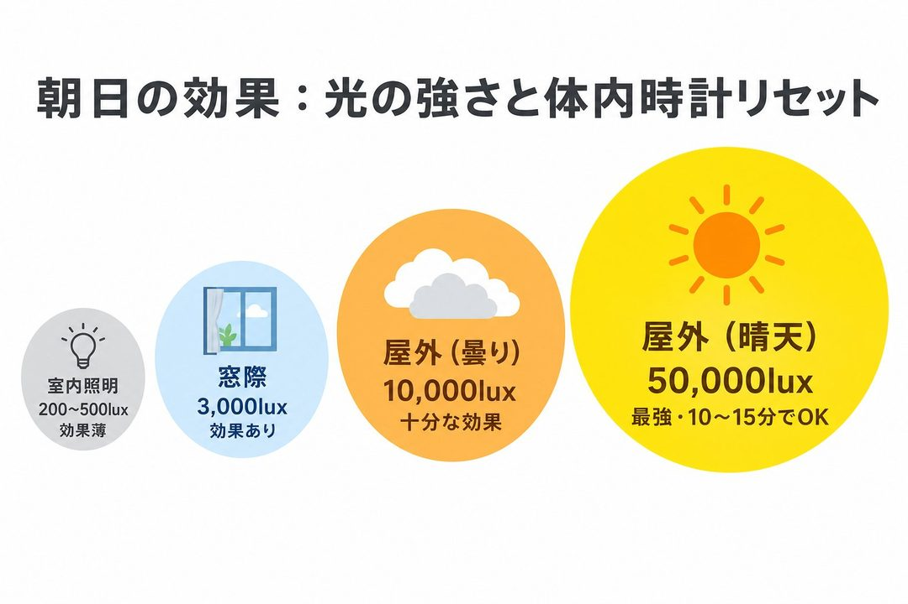
光の強さと体内時計リセット効果
朝食——睡眠ホルモンの「種まき」
「朝食を食べない」ことは、睡眠の質にも悪影響を与えます。
朝食でトリプトファンを摂取し、日中に太陽光を浴びることでセロトニンが合成されます。
このセロトニンが夕方以降に変換されてメラトニンとなり、夜の眠りを準備します。
朝食にトリプトファンを含む食品を意識して取り入れましょう。
- バナナ + ヨーグルト（トリプトファン＋炭水化物＋乳製品）
- ご飯 + 納豆 + 味噌汁（和食の定番がトリプトファン豊富）
- 全粒粉パン + チーズ + 牛乳
また朝食のタイミングも重要です。
起床後1時間以内に朝食を摂ると体内時計のリセットが強化されます。
「光」と「食事」の二重のリセットが体内時計を整え、夜の良質な眠りに繋がります。
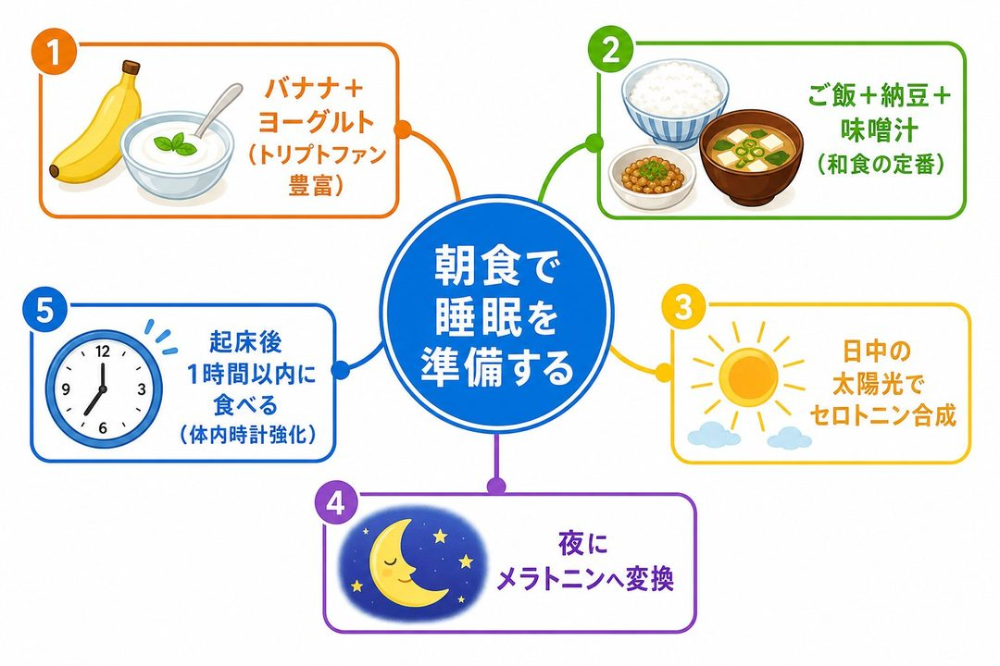
朝食で睡眠を準備する
睡眠記録——「測ること」で睡眠が改善する
現代ではスマートウォッチや睡眠トラッキングアプリを使って、睡眠の質を客観的に把握することができます。
主な計測指標:
- 総睡眠時間
- 深い睡眠（ノンレム）とレム睡眠の割合
- 睡眠の分断回数（中途覚醒）
- 安静時心拍数
データで睡眠を「見える化」することで、どの習慣が効果的かを科学的に検証できます。
「お酒を飲んだ翌日は深い睡眠が〇〇%減少する」
「入浴をした夜は深い睡眠が〇〇分多い」——こうした個人データが蓄積されると、自分専用の最適な睡眠プロトコルが作れます。
おすすめの睡眠トラッキングデバイス:
Apple Watch・Garmin・Oura Ring・Fitbitなど多数の選択肢があります。
高価なデバイスでなくても、無料のスマートフォンアプリ（Sleep Cycle等）でも十分なデータが取れます。
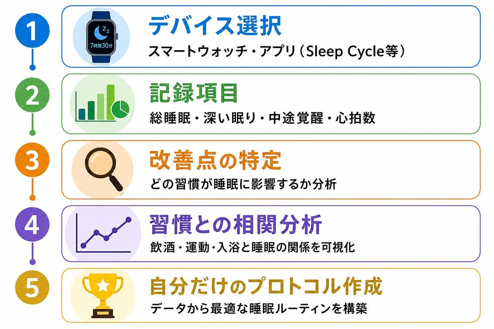
睡眠記録の始め方
7日間で試せる「睡眠改革プログラム」
最後に、今日から始められる7日間の睡眠改革プログラムをご紹介します。
Day 1（環境整備）
寝室の遮光カーテンを確認・設置する。
スタンバイランプをすべて塞ぐ。
室温を18〜20℃に設定する。
Day 2（スマホ排除）
スマホの充電場所を寝室の外に移す。
就寝1時間前からスマホを触らない習慣を始める。
Day 3（カフェイン管理）
午後2時以降のカフェイン摂取を止める。
水・ハーブティー・ルイボスティーに切り替える。
Day 4（入浴最適化）
就寝1〜2時間前に38〜40℃のお湯で入浴する。
入浴時間を10〜15分に設定する。
Day 5（朝のルーティン）
起床後すぐにカーテンを全開にして光を浴びる。
できれば5〜10分外に出る。
Day 6（食事見直し）
夕食は就寝3時間前までに終わらせる。
就寝前はホットミルクかカモミールティーにする。
Day 7（記録開始）
睡眠記録アプリをダウンロードして記録を開始する。
1週間後のデータを比較する。
7日間実践すれば、あなたの睡眠は確実に変わっています。
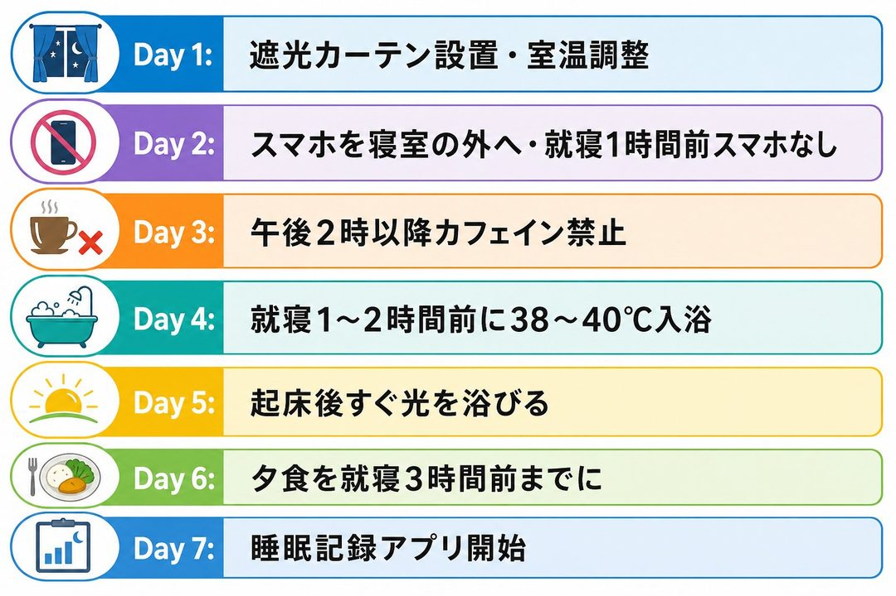
7日間睡眠改革プログラム
睡眠の「ゴールデンルール」
本書のまとめとして、すべての実践の根底にある睡眠のゴールデンルールを示します。
ルール1: 毎日同じ時刻に起床する
体内時計の安定がすべての基盤。
休日も±30分以内に抑える。
ルール2: 朝日を浴びる
起床後30分以内に自然光を浴びて体内時計をリセットする。
ルール3: 就寝1時間前にスマホをしまう
メラトニンの分泌を守ることが、入眠の質を決定的に改善する。
ルール4: 就寝1〜2時間前に入浴する
深部体温の急降下を利用した自然な眠気を作る。
ルール5: 寝室を「眠るための聖域」にする
光・音・温度を最適化し、デジタルデバイスを排除する。
この5つのルールを守るだけで、あなたの睡眠の質は別次元に変わります。
「眠れる人になる技術」は、難しい技術ではありません。
正しい知識と習慣の積み重ねです。
今夜から始めてみましょう。
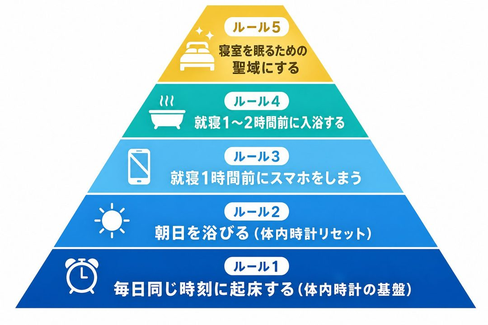
睡眠のゴールデンルール5
07おわりに
あなたはこの本を通じて、睡眠についての「正しい知識」を手に入れました。
睡眠の質を上げることは、特別なことではありません。
科学的に証明された方法を、毎日少しずつ実践すること——それだけです。
最初から全部を変える必要はありません。
まず一つだけ試してみてください。
スマホを寝室の外に出す。
就寝1時間前に入浴する。
朝、カーテンを開けて光を浴びる。
たった一つの変化が、睡眠を変え、翌朝の気分を変え、日中のパフォーマンスを変え、やがて人生全体を変えます。
「よく眠れた朝」は、最高の朝です。
その最高の朝を、毎日迎えることができるようになったとき、あなたはきっと気づくでしょう——「眠れる人になる技術」を学んでよかったと。
今夜から、新しい眠りが始まります。
おやすみなさい。
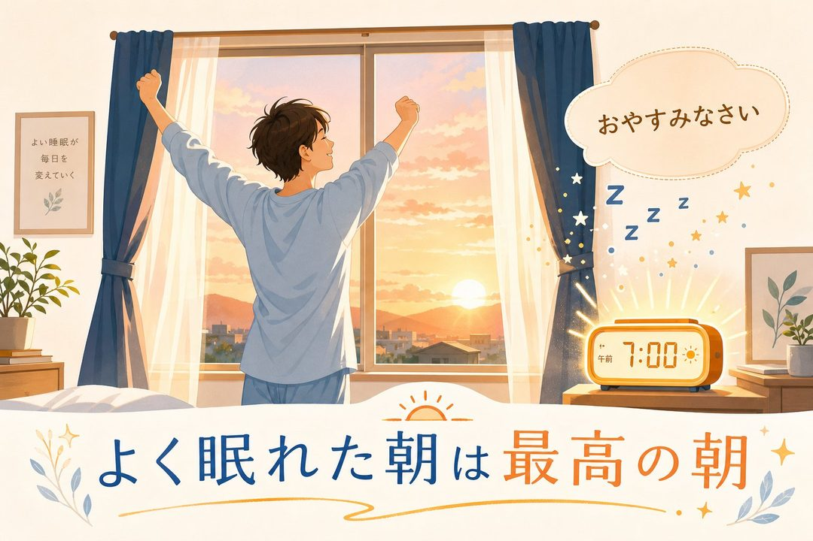
おわりに
© 竹谷知悦 / 特別プレゼント版